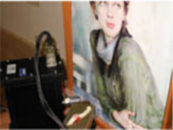

L’Ars Mensurae, fondata nel 2001, opera da anni nel settore delle indagini diagnostiche applicate ai beni culturali, grazie ad un team di professionisti specializzati in diversi ambiti, diagnostica, restauro, tecnologia, fisica, chimica, arte e anticontraffazione, che collaborano integrando le proprie competenze per una conoscenza più completa e multidisciplinare del patrimonio culturale.
L'attività dell'Ars Mensurae, da sempre attenta alle esigenze concrete degli operatori nei beni culturali, si concentra principalmente sulla ricerca e sviluppo di tecnologie all'avanguardia, finalizzate allo studio dei manufatti artistici secondo una duplice prospettiva: archeometrica, per la caratterizzazione dei materiali costitutivi e delle tecniche esecutive; diagnostica, per la valutazione dello stato di conservazione e dei processi di degrado.
Le indagini si avvolgono prevalentemente di strumentazioni portatili e non invasive, così da garantire il massimo rispetto dell’integrità delle opere e la sicurezza degli operatori.
L'esperienza maturata nel tempo consente ad Ars Mensurae di condurre campagne diagnostiche professionali, rapide nella logistica organizzativa, efficenti nella presa dati e nella consegna dei report, immediate nelle risposte fornite, flessibili e versatili nell'adattamento alle più complesse condizioni di lavoro (dai cantieri più impegnativi, ai musei, fino agli ambienti domestici). Viene così offerta un'interpretazione dei dati completa, approfondita e frutto della sinergia delle diverse professionalità coinvolte, il tutto con costi contenuti, sostenibili e adattabili alle diverse esigenze.
Il team di professionisti specializzati dell’Ars Mensurae è composto da:
Prof. Stefano Ridolfi, responsabile tecnico
Dott.ssa Ilaria Carocci, responsabile del settore conservativo e diagnostico
Dott.ssa Susanna Crescenzi, responsabile del settore tecnologico e microclimatico
Dott.ssa Giulia Ristori, responsabile settore storico artistico ed anticontraffazione